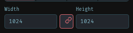
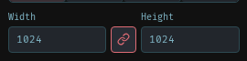
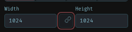
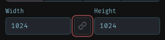
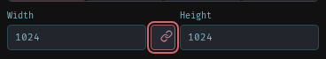
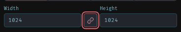
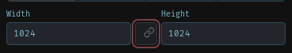
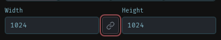

Export aspect-ratio button alignment
Interface review · Earlier visual fixes
The shared button style supplied 10 px horizontal padding. The fixed-width link button placed its SVG 4 px right and 2 px above center. Zero padding and explicit grid centering now align the chain icon to its button and both dimension inputs.
Eight actual-interface captures cover desktop/mobile and locked/unlocked states before and after. After: 0 px horizontal and vertical center error, no clipping, and unchanged input alignment. Keyboard Space toggles the lock; dimensions stay coupled when locked and independent when unlocked. Measurements and behavior receipt.
Desktop, 1600 × 1040: locked
Before
After
Desktop, 1600 × 1040: unlocked
Before
After
Mobile, 390 × 844: locked
Before
After
Mobile, 390 × 844: unlocked
Before
After